Wilson Yan
Hi everyone! I was previously a senior research scientist at Google DeepMind. I also completed my PhD at UC Berkeley, where I was fortunate to be advised by Professor Pieter Abbeel. Partway through my PhD, I spent some time at Perplexity working as their first-ever intern.

Research
My current research is focused on world models for control.
-
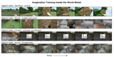
Training Agents Inside of Scalable World ModelsAchieving diamonds in Minecraft using a purely offline world model-based approach.
-
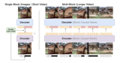
ElasticTok: Adaptive Tokenization for Image and VideoICLR 2025
Learns variable-length tokenization for image and long video.
-
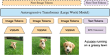
World Model on Million-Length Video and Language With Blockwise RingAttentionICLR 2025
A vision-language model trained on million-length sequences of images, language, and video.
-
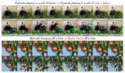
Motion-Conditioned Image Animation for Video EditingA motion-conditioned image animation approach to video editing that enables a diverse range of edit types.
-
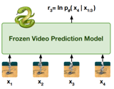
Video Prediction Models as Rewards for Reinforcement LearningNeurIPS 2023
We show that video prediction likelihoods can provide a dense reward signal for training reinforcement learning agents.
-
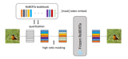
Language Quantized AutoEncoders: Towards Unsupervised Text-Image AlignmentNeurIPS 2023
We learn an aligned text-image token representation without text-image data, which can then be used for downstream VQA and classification tasks via in-context learning with an LLM.
-
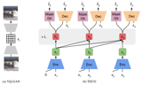
Temporally Consistent Transformers for Video GenerationICML 2023
A vector-quantized latent dynamics video prediction model that learns compressed representations to efficiently condition on long videos of hundreds of frames during both training and generation.
-
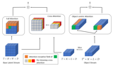
Patch-based Object-centric Transformers for Efficient Video GenerationA video generation architecture that leverages an object-centric transformer design for more scalable and efficient video generation.
-
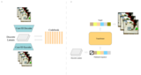
VideoGPT: Video Generation using VQ-VAE and TransformersAn efficient and scalable video generation architecture that first learns a VQ-VAE to compress video data, and then learns a GPT-style transformer to model the discrete latent codes.
-
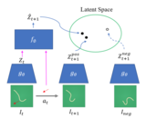
Learning Predictive Representations for Deformable Objects Using Contrastive EstimationCoRL 2020
Using contrastive methods to learn plannable representations for manipulating deformable objects such as rope and cloth.
-
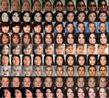
Natural Image Manipulation for Autoregressive Models using Fisher ScoresPreprint
Performing image interpolation and semantic manipulation (e.g. hair color, smiling, gender) with a PixelCNN on facial images, using Fisher scores as an embedding space.
-
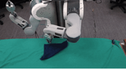
Learning to Manipulate Deformable Objects without DemonstrationsRSS 2020
Sim-to-real transfer for learning a cloth-spreading policy on a real robot without any human demonstrations.